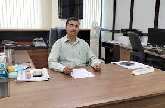
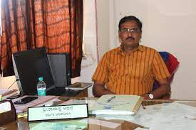
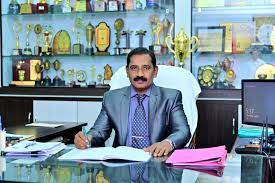

|
|
|

| chancellor
College Choice helps students find a college program that meets their needs. Our resources include college rankings, lists of the best colleges by state, and program rankings at the undergraduate and graduate levels. We also publish guides, college planning resources, information on paying for college, and career planning tools.Thousands of colleges grant degrees in the U.S. Prospective students can choose between two-year and four-year institutions, as well as in-person and online programs. And they can select from hundreds of academic programs.College Choice sets high editorial standards and relies on editors, writers, and subject matter experts to create our content. Our team evaluates data from national databases and degree-granting institutions. By using credible sources, our site provides accurate and relevant information to help college students make decisions about their future.
College Choice also draws on a network of experienced writers and contributors to craft reliable, reputable content for college students. We incorporate expert interviews to provide insight into career paths, degrees, and the college decision process.
Finding the right college can easily overwhelm applicants. Fortunately, College Choice helps guide students and parents/guardians through the complicated college decision landscape. Our resources help families navigate their choices and find a good fit.
We also aim to fill the gap between finding a college and actually attending college by advising students on their financial aid options and recommending ways to prepare for different programs and careers.
|
| Shri Jagdeep Dhankhar |
Shri Rakesh Kumar |
Finance Officer Dear Parents, Guardians, and Valley Middle School Community,
It is with great pleasure that I welcome you and your family to another exciting year at Valley Middle School. I consider myself very fortunate to work with many dedicated, innovative and caring staff members, parents and students. Each day is filled with new experiences, learning for all, and the ability to make someone’s day better.
Valley Middle School’s curriculum and practices are consistently reviewed to ensure that we are following the most updated best practices, meeting all regulations, and addressing the future needs of our students. Our staff consistently follows current trends and, in collaboration with administration, creates a plan of action to incorporate those trends into our classrooms. One of the largest areas of growth is the increased use of technology in our classrooms. Each student is assigned a Chromebook that they use throughout the school year. Students work with Google Docs, Google Classroom, Edu-creations, IXL, and many other programs. Some of our teachers also utilize the Flipped Classroom method as part of their class instruction.
The students at Valley Middle School are offered many opportunities to explore their interests and investigate new ideas. We offer many clubs, activities, sports and a large variety of musical ventures that our students can participate in. Many of our students are involved in a variety of extracurricular activities that allow them the opportunity to grow at their own pace in a safe, nurturing environment. Our list of clubs, activities and other extracurricular offerings are broadened each year in hopes of including something that interests each student.
Each year we celebrate a theme. This year’s theme is “Stronger Together.” Throughout the year our staff and students will be using this theme to motivate and guide our social interactions, support our efforts to improve the community, and to encourage us to take care of ourselves and each other. Being kind is a choice, an attitude, and becomes a habit.
I consider myself very fortunate to be a team member of Valley Middle School as well as in the Oakland School District. Each day I am amazed by the little things the people of our school community do for one another. It is these daily reminders that make our school district unique and special.
Please take a moment and visit our school’s website. As always, please feel free to contact me with any questions or concerns.
Enjoy your day,
Ms. Jacqueline Micari-Christiano
Vice Principal Girish Ranjan has assumed the office of Finance Officer on 1st February 2021. He has more than 23 years of working experience in Higher Educational Institutions. Prior to joining Delhi University, he worked as Finance Officer of Central University of South Bihar for almost 5 years. He also served as Deputy Registrar and Joint Registrar in Indira Gandhi National Tribal University, Amarkantak which is also a Central University. He was one of the back bone of the infrastructural developments of both these Central Universities. |

|
Director South CampusThe Finance Officer is a whole time salaried Officer of the University. The Finance Officer functions under the overall control of the Vice-Chancellor, he looks after the financial matters of the University and required to exercise general supervision over the funds of the University. The Finance Officer is responsible for the proper maintenance of the accounts of the University, subject to the control of Executive Council. He is the Member-Secretary of the Finance Committee of the Himachal Pradesh University and performing following functions:
Exercise general supervision over the funds of the University and shall advise it as regard its financial policy.
Be responsible for the proper maintenance of the accounts of the University; and
Perform such other financial functions as may be assigned to him by the Executive Council or as may be prescribed by these Statutes or the Ordinances; Provided that the Finance Officer shall not incur any expenditure or make any investment exceeding Rs.10,000/- without the previous approval of the Vice-Chancellor.
Subject to the control of the Executive council, the Finance Officer shall-
Hold and manage the property and investments including trust and endowed property for furthering any of the objects of the University.
See that the limits fixed by the Finance Committee for recurring and non-recurring expenditure for one year are not exceeded and that all moneys are expended on the purposes for which they are granted or allotted.
Be responsible for the preparation of annual accounts and the budget of the University for the financial year and for presentation of the same to the Executive Council.
Keep a constant watch on the state of the cash and bank balances and on the state of investments;
Watch the progress of collection of revenue and advise on the methods of collection employed;
See that the registers of building, land furniture and equipment are maintained up-to-date and that the stock checking of equipment and other consumable material in all offices, teaching departments, colleges and institutions maintained by the University is conducted at regular intervals, or as may be required from time to time. |

|
Dean of CollegesDean is a title employed in academic administrations such as colleges or universities for a person with significant authority over a specific academic unit, over a specific area of concern, or both. In the United States and Canada, deans are usually university professors who serve as the heads of a university's constituent colleges and schools. Deans are common in private preparatory schools, and occasionally found in middle schools and high schools as well.
Origin
Main article: Dean (Christianity)
A "dean" (Latin: decanus) was originally the head of a group of ten soldiers or monks. Eventually an ecclesiastical dean became the head of a group of canons or other religious groups.
When the universities grew out of the cathedral schools and monastic schools, the title of dean was used for officials with various administrative duties. |
Committiees
- Development committee.
- The college has a development committee to look into the overall development of the college. ...
- Guest Faculty committee: ...
- Residential Committee. ...
- Prepayment Post-purchase Committee. ...
- Purchase Committee. ...
- Proctorial Committee. ...
- Examination Committee. ...
- Tabulation Committee.
|
|
Director,Campus Of Open Learning Our College started with just a very few departments and minimum infrastructure. There were no huge buildings and sophisticated constructions that we witness today. At the time of establishment of this institution, there were only small blocks. Today, with over a hundred departments and various courses, our college shines with exceptional quality! Many students who join for their bachelor's, continue their education till their master degree at this college. Some even opt to complete their doctorate degree as well.
This proves that the education provided in our college is extremely qualified. Moreover, there are plenty of other streams that our college offers apart from studies. It is my honour to mention as the College Secretary that our College wins the overall trophy for state level sports competition every year! There are plenty of opportunities for students to seek, to strive and to learn in this College. Our College has developed into a place where students are craving to seek admission at. In the entire history of our College, no student is left behind without admission. Yes! You heard it right. No student is left behind! Every person who walks in willingly to study at our college pursues their choice of course, leading a successful life! |

|